Video generation models are expensive to run. To naively generate 1 minute of video at 32 fps and 720p resolution, we need to perform attention over a sequence of 1920 frames and 2.7 million features per frame, which takes 5 GB of memory per layer to store at fp8. If we use an aggressive image autoencoder such as DC-AE with around a 25x compression rate, we can cut the number of features per frame to around 100k.
However, this still wastes a large amount of memory because neighboring frames contain a lot of uninteresting content. We can deal with this problem by training a video autoencoder that compresses both spatial and temporal dimensions.
Notation. Throughout we write video tensors with the following symbols:
$H$: video height
$W$: video width
$T$: total number of frames
$C$: input channel count (3 for RGB)
$s$: spatial compression rate
$\tau$: temporal compression rate
$d$: latent channel count
$K$: number of selected (kept) frames
Most video autoencoders use a fixed spatial and temporal compression ratio. This means that they compress a video in shape of $(H, W, T, C)$ to a tensor in shape of $(H/s,\, W/s,\, T/\tau,\, d)$.1 However, some videos are much more compressible than others; a slow zoom-in contains much less information than an action movie scene. This means that a large amount of compute is wasted on uninteresting computation.
To bypass this, the current mainstream approach is to use a model to pick out key frames of a video, train the diffusion model to only generate keyframes, and during inference, run a cheap video model to fill in the intermediate frames between each keyframe. Although this cuts down on computation, it reduces the signal given to the diffusion model and prevents the diffusion model from controlling the entire scene, leading to slow and predictable movements; the frame interpolation model draws the most probably path of movement, which usually manifests as something similar to a straight line.
Here's a video I generated with Luma's model. Despite trying multiple times to prompt the model to move as fast as possible, this was the best I was able to get.
Our solution is using a video autoencoder with a dynamic temporal compression rate. During compression, the autoencoder compresses the video into a latent space and selects some elements of the latent space to mask out. To be precise, our encoder maps the video from $(H, W, T, C)$ to a tensor in shape of $(H/s,\, W/s,\, K,\, d)$, and a boolean mask in shape of $(T,)$. Since the compression happens after a sequence of spatiotemporal attention layers, the encoder can move information between frames before masking, which allows the diffusion model to see the entire video.
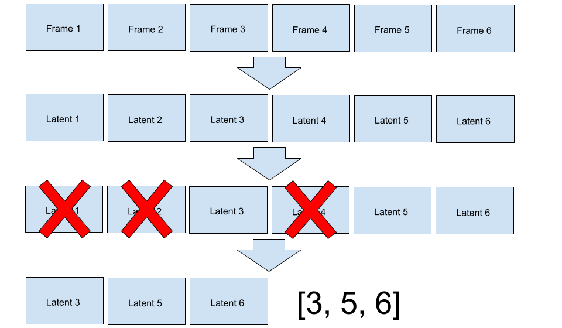
We chose fairly standard architectural choices for the model; it was a ViT with factored spatiotemporal attention.
The primary difficulty was training the encoder to mask frames properly. Deleting frames is implemented as multiplying a compressed representation in shape of $(H/s,\, W/s,\, T,\, d)$ with a boolean mask in shape of $(T,)$. The mask is generated by Bernoulli sampling each element of the $(T,)$ tensor. Thus, if we train the autoencoder to generate a reasonable mask, everything should fall into place around it. To prevent the model from keeping every frame, we add a L1 penalty, $\lambda_1$ on the sum of the boolean mask, so $L = L_{\text{reconstruction}} + \lambda_1 \cdot K$.2
We started with a STE (straight through estimator). If we applied a Gumbel-sigmoid activation function on the logits of the mask, the model should learn which frames would minimize reconstruction loss the most. Unfortunately, this did not work; the model simply kept the same set of frames for every video. We suspect this failed because this problem is too discrete for the STE to handle; gumbel softmax is typically used in MoE training, where using a convex combination of multiple experts is acceptable. However, in our regime, the STE was only able to see gradients from entirely masked or unmasked frames, without any in-between frames.3
Left without any other choice, we were forced to use RL to solve this problem. We trained a value network that predicts the expected loss of each video, and used that as the expectation baseline for RL. This worked, but it was unstable, added another model to train, and required frequent tuning when stacking with other changes.
Ultimately, we chose to simply generate two masks by sampling twice, compute loss for both, and use the mean of both masks as the expected reward, which is empirically much more stable. This doubles the compute requirements for the decoder, but the decoder is typically a larger model and requires more signal anyways. In our case, we would have required multiple epochs over the dataset, so a 1:2 encoder to decoder data ratio was deemed acceptable.
Regardless of which method we chose, the encoder had a strong tendency to create degenerate probability distributions, where the P(frame is masked) approached 0 or 1. This is likely the optimal solution; some frames are critical for reconstruction, and other frames are near useless. However, degenerate distributions prevent exploration and passing identical latents into the decoder wastes compute.
We speculated this happened because of the following phenomenon: if two frames were identical, the decoder would prefer to assign a probability of 1 to one of the frames and 0 to the other frame. This probability assignment guarantees exactly one frame is kept, so there is no risk of keeping zero frames (explodes reconstruction loss) or two frames (increases L1 penalty for no extra information). However, if two frames were equal, we might prefer a distribution where both frames have a 50% chance of being kept to preserve exploration.
An intuitive way to resolve this problem is with stratified sampling. Each sequence of mask probabilities can be chunked into subarrays with total probability of 1. For example, if we had a vector of probabilities that looked like [0.5, 0.5, 0.3, 0.4, 0.2, 0.1, 0.5, 0.1], the array would be split into [0.5, 0.5], [0.3, 0.4, 0.2, 0.1], and [0.5, 0.1]. We would sample an element from each subarray before merging them back; in this example, the sample might look like [1, 0, 0, 0, 1, 0, 0, 0].4
Stratified sampling can be efficiently implemented on modern hardware, but the number of unmasked frames is near constant, so the model faces significantly less pressure to learn high compression rates. Empirically, the model stagnates at a low compression rate and stops learning.
We tried other methods to resolve the degenerate distribution problem, including entropy penalties, but they were unstable, difficult to tune, and sometimes collapsed later in training. We ultimately solved the problem with brute force; any logit with absolute value greater than 4 gets a large l1 penalty applied to it. This means that the model is penalized for masking out a frame with probability under 2% or over 98%. We chose this threshold because in the worst case, around 13% of our compute would be wasted on duplicate latents, which was the most we were willing to tolerate. In practice, the amount of wasted compute was significantly lower (below 5%).5
After training on a dataset of 200 million frames and 6k TPU v6e hours (which translates to around 3k H100 hours), we were able to get decent results with our 170M parameter model.
The VAE encodes 256x256 video into a compact latent (with 8x spatial compression) and reconstructs it. Averaged over 600 real videos:
| Metric | Value |
|---|---|
| MSE | 0.0025 |
| Mean frame keep rate | 18.5% (5.9 / 32 frames) |
| Average temporal compression | 5.4x |
| Combined compression (spatial × temporal) | 43x |
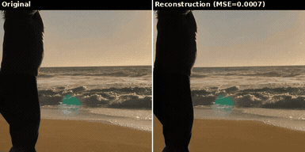
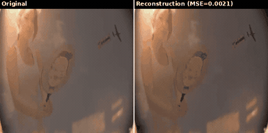
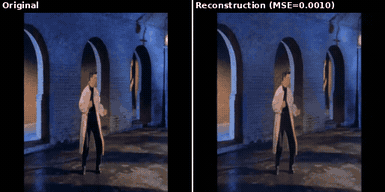
To see how well the encoder performs at all compression budgets, we keep only the top-K frames for this demonstration.
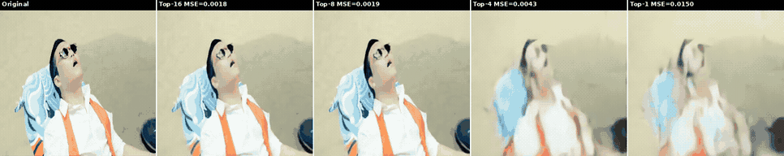
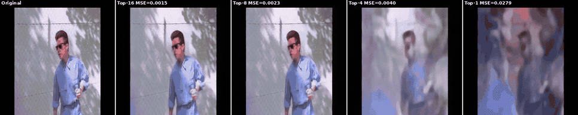
To validate that the encoder was intelligently choosing frames, we inspected a few videos manually. As you can see, the slow moving videos are typically more compressed than the faster ones.
| Clip | Frames | Kept | Keep rate | Compression | MSE |
|---|---|---|---|---|---|
| Slow zoom | 32 | 10 | 31.3% | 3.2x | 0.0097 |
| Other slow zoom | 32 | 4 | 12.5% | 8.0x | 0.0011 |
| Water | 32 | 13 | 40.6% | 2.5x | 0.0024 |
| Jumping human | 32 | 8 | 25.0% | 4.0x | 0.0028 |
| Badminton? | 32 | 3 | 9.4% | 10.7x | 0.0006 |
| Rickroll | 32 | 6 | 18.8% | 5.3x | 0.0016 |
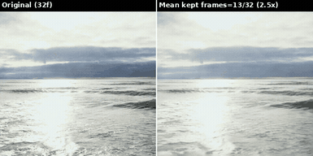
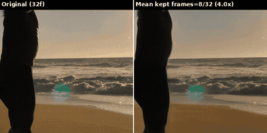
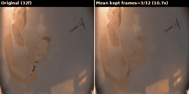
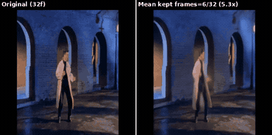
At the end of the day, a VAE is only useful if it can create a good latent space for a generative model.6
The diffusion model is not the focus of this blog post, so this blog won't go into the details of training it.
We didn't have enough remaining compute or data to properly train a proper diffusion7 model, but we gave it our best shot anyways. After roughly 6k TPU v6e hours, here are the results for the 500M model:
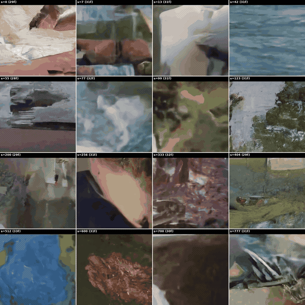
This was my first time training a video model, so I'm not sure if these results are good for the training data or compute budget. It's almost certainly data starved and undertrained, these results seem decent enough for a general purpose video generation model under the given budget.
Due to time and compute limitations, we only used data parallelism on TPUs. Since each TPU doesn't have much VRAM, we were only able to train with frame lengths of up to 32. We suspect this is why the encoder sometimes keeps redundant frames; for simple scenes that only need 1-2 frames in total, there is a non-negligible probability that all frames are dropped. If we had longer sequences, the cost of dropping a few frames is amortized across the rest of the sequence, so we would likely get better compression rates.
Thank you to Google's TRC program for providing us with the compute, and to Panda 70M for curating a large dataset.